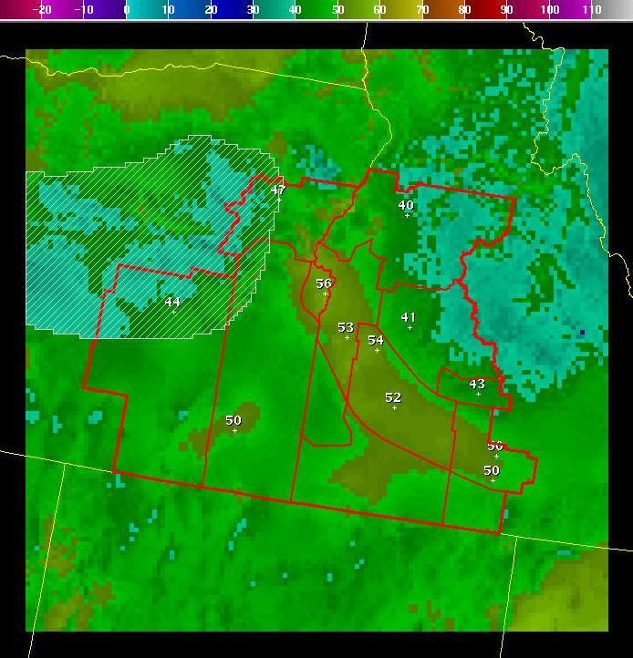

ModelBlend
Introduction
Sometimes it is desirable
to average grids from different models, different runs, etc. This tool allows you to
make a weighted average of many grids, including the forecast, official, and model
grids. Complex weighted averages can be constructed in a single step, and model
extrapolations can also be constructed. The tool has the ability to blend
inside an edit area rather than over the entire grid, and to apply ‘edge effects’ to
the blending in those areas – so that they blend in smoothly with unmodified points
outside the edit area. The tool can be used on any scalar or vector grid.
When used on a vector grid, the vector is changed into components before performing
the weighted average, then transformed back to the normal vector grid.
How
the Procedure Works
Lets say we start with a
Fcst minimum temperature forecast grid that looks like this:
Now suppose that the latest
ADJMEX model forecast grid for the same period (a 6-day forecast) looks like this:
The difference between
these two grids is very complex:
Now, suppose we somewhat
believe this ADJMEX model forecast. However, since it is a day-6 forecast, we want
to slowly nudge our forecast grid toward the ADJMEX solution, rather than adopt
the ADJMEX grid completely. The Model_Blend tool allows us to make a weighted
average of our current Forecast Grid and this ADJMEX forecast grid.
Running
the Procedure
When the Model_ Blend tool
is started, a dialog appears where you can specify weights for various forecast,
official and model grids:
Note that the default it to
weight the forecast grid with a value of one, and all other grids with a value of zero.
Thus, if nothing on this dialog were changed, and the tool run (by clicking on the Run
or Run/Dismiss buttons), then the forecast grid would be returned unchanged.
In this case, suppose we want to evenly weight the current forecast grid and the latest
ADJMEX forecast grids that were shown above. We could change the slider weights to
indicate this:
Weighting the grids evenly
means that a simple average is being performed. The average grid comes out:
If you carefully look at the
sample points, you will see that the grid is an average of the Forecast and ADJMEX grid.
Note that in this case we set the weights to one for both the Forecast and the ADJMEX
grid. We could have easily weighted them both ten, and the result would be the same.
The magnitude of the weights is irrelevant in this case, the fact that the weights are
equal means that a simple average is performed.
Suppose, instead, that we wanted to weight our average more strongly toward the new
model solution. We could set the weights such that the ADJMEX model is weighted with
a value of three, and the current forecast with a value of one.
Since there are four total
units, and the ADJMEX receives three and the current forecast one, the ADJMEX will make
up 75% of the new grid (3/4) and the current forecast will make up 25% (1/4) of the new
grid. The new weighted average looks like:
Suppose, instead, that we
want to evenly weight the current ADJMEX 6-day forecast, with the 7-day forecast from
the previous ADJMEX run. This evenly accomplished by setting the weights equally in
the Model_Blend dialog:
Note that we set the weight
for the current forecast to zero - indicating that we want only the average of the two
ADJMEX runs. The two ADJMEX forecast grids look like this:
The resulting simple average
of these two grids becomes:
The weight sliders can be
configured to allow negative values. Negative weights allow you to perform model
extrapolations. Consider, for example, only the sample value at Burns, Oregon
(the westernmost sample point on the images). The current ADJMEX run forecasts
44 degrees for this point, while the previous run forecast 41 for this point.
The ADJMEX forecasts are getting warmer. One could argue that the best forecast
might be even warmer than the 44 degrees forecast by the latest ADJMEX run.
A simple extrapolation can be performed by making the weight for the earlier run
negative, and half as large as the current run. For example, we can set the weight
for the latest run to two, and the weight for the earlier run to negative one:
Consider, again, only
the point for Burns, Oregon. The new value will be (2*44) + (-1*41) = 47.
The trend of warming 3 degrees is continued for 3 more degrees of warming.
This is performed individually at every gridpoint. Some gridpoints cooled between
the first run and the second run, and likewise at those locations, the cooling is
extrapolated to the final grid. The resulting grid looks like this:

Note that the sample value
at Burns, Oregon turned out to be 47, just as we calculated above.
A simple extrapolation, as described above may be too extreme. Again, considering
only the forecast for Burns: the 7-day forecast was 41 and the 6-day forecast was 44.
If you believe that such a trend will continue, then the 5-day forecast will be 47,
the 4-day forecast will be 50, the 3-day forecast will be 53, the 2-day forecast
will be 56, the 1-day forecast will be 59, and the final temperature will be 72.
Such a procedure is clearly nonsense. The 6-day forecast of 44 is warmer than the
earlier run, but it is the best forecast that the model can provide at that time.
While extrapolating the trend somewhat might be reasonable, extending it indefinitely
is foolish.
Suppose that we want to use some of the trend, but weight the combination strongly
toward the value in the latest forecast. Again, you can use negative weights on an
earlier forecast, but much larger positive weights on the latest forecast.
For example, if we weight the new forecast with a value of eight, and the old
forecast with a value of negative one:
The resulting grid looks like:
Note that the extrapolation
makes a forecast of 44 at Burns. The continuation of the trend is so small that it
is indistinguishable from the latest ADJMEX forecast.
More than two grids can be combined using the Model_Blend tool. You can set equal
weights for all grids, and get a simple average of all model forecasts. Very complex
weighting schemes that weight one model more heavily than others can also be
accomplished.
New in version 2.0 of the tool, is the ability to apply the blend over the current
edit area, rather than the entire grid. For example, here we display an edit area
over both the current Fcst grid and the ADJMEX grid.
Current Fcst Grid:
ADJMEX Grid:
If we specify the
weights in Model_Blend dialog to be zero for the Fcst grid and one for the ADJMEX
grid (essentially copying the ADJMEX grid into the Fcst grid – but only inside the
edit area):
Then the resulting grid becomes:

Note that because we
specified “Flat” (the default) that some intense temperature “gradients” were
introduced. This is because the model data copied inside the edit area does not
match with the original Fcst grid outside the edit area. There are two ways to
mitigate this problem.
First, you can specify an “edge” behavior inside the edit area where “blending” will
taper back to zero, (and you can specify the edge width – in pixels) such as:
Where the default edge
width of 5 pixels is chosen. The resulting grid comes out:

Note that there are no
extreme “gradients” and that within 5 pixels of the edge of the edit area, the r
esulting grid is a blend of the ADJMEX grid and the Fcst grid.
If, instead, you would like only the center of the edit area to get the full Model
Blend that you specify – and taper back smoothly to the original grid at the outer
edge of the edit area, then you could specify “Taper” in the dialog:
Here the resulting grid comes out:
One important restriction on
your weights is enforced: the weights cannot add up to zero. You cannot weight one
model with positive one and another with negative one, because the total weight would
be zero. This can also occur if model data cannot be read from the database - in
which case the weight for that model run is removed from the overall weights.
Care should be take to use the tool with model grids that exist - and with
combinations of weights that do not add to zero.